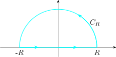
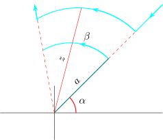
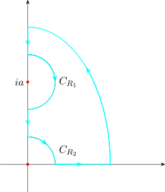
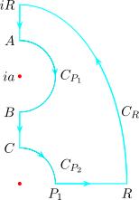

8.1 Jordan Inequality
\(\frac {\sin \theta }{\theta } > \frac {2}{\pi }\quad \) for \(\quad 0\leq \theta \leq \frac {\pi }{2}\)
Proof. Consider the function \(f(\theta ) = \frac {\sin \theta }{\theta }\)
\[f'(\theta ) = \frac {\theta \cos \theta - \sin \theta }{\theta ^2}\]
Thus for \(\, 0 < \theta < \frac {\pi }{2}\)
\[f'(\theta ) = \frac {\cos \theta }{\theta ^2}\big [\theta - \tan \theta \big ]\]
The sign of \(f'(\theta )\) is determined by the sign of \(\,\theta - \tan \theta \,\) which is negative. Thus \(f(\theta )\) is decreasing on \(0 < \theta < \frac {\pi }{2}\).
But \(\, \lim \limits _{\theta \rightarrow 0} \frac {\sin \theta }{\theta } = 1 \quad \) and \(\quad \lim \limits _{\theta \rightarrow \frac {\pi }{2}} \frac {\sin \theta }{\theta } = \frac {2}{\pi }\).
Thus \(\quad 1\geq \frac {\sin \theta }{\theta }> \frac {2}{\pi }\quad \) from which we get \(\, \frac {\sin \theta }{\theta } > \frac {2}{\pi }\,,\, 0 < \theta < \frac {\pi }{2}\).
The other way
\(\theta - \tan \theta \,\) is indeed negative. Consider \(\, g(\theta ) = \theta - \tan \theta \)
\[g(0) = 0- 0 = 0\]
\[g'(\theta ) = 1 - \sec ^2\theta = - \tan ^2\theta < 0\]
i.e \(g'(\theta ) = \theta - \tan \theta \,\) is a decreasing function for any \(\theta \). Thus \(\, \theta - \tan \theta \,\) is negative. □
Theorem 8.1 (Jordan’s Lemma). Let \(C_R\) be a semicircle of radius \(R\) centered on the origin lying in the upper half of the complex plane. Let \(f(z)\) be such that
- i.
- It is analytic in the upper half of the complex plane except at a finite number of singularities.
- ii.
- \(\,\left |f(z)\right |\longrightarrow 0\,\) uniformly as \(\, \left |z\right | \longrightarrow \infty \,\) for \(\, 0\leq Arg(z) \leq \pi ,\,\) then if \(\, M>0\)
\[\lim \limits _{R\rightarrow \infty } \int _{C_R} e^{imz}\,f(z)\,dz = 0\]
Proof. From (i), we have that for suitably large \(R_0\) all singularities of \(f(z)\) will lie inside
\(\,\left |z\right |< R_0,\, \operatorname {Im} (z)> 0\,\) and that \(f(z)\) will be continuous on \(C_R\) for \(R> R_0\).
From (ii) for any \(\varepsilon > 0\) we can find \(R(>R_0)\) such that on \(C_R,\,\left |f(z)\right | < \varepsilon _R\) where \(\varepsilon _R \longrightarrow 0\) as \(R\longrightarrow \infty \).
On \(C_R,\, z = Re^{i\theta },\quad dz = iRe^{i\theta }d\theta \quad 0 \leq \theta \leq \pi \). So as \(\left |e^{i\theta }\right | = 1\,\) and \begin {align*} \left |e^{imz}\right | & = \left |e^{im\big (R\cos \theta + iR\sin \theta \big )}\right |\\ & = e^{-mR\sin \theta } \end {align*}
\begin {align*} \text {We have}\qquad \left |\displaystyle {\int _{C_R}}e^{imz}f(z)dz\right | & = \left |\displaystyle {\int ^{\pi }_0 e^{imz}f(z) iRe^{i\theta } d\theta }\right |\\\\ & \leq \int ^{\pi }_0\left |e^{-mR\sin \theta } f(z) iRe^{i\theta }\right |d\theta \\\\ & \leq \varepsilon _R R \int ^{\pi }_0e^{-mR\sin \theta }d\theta \\ \end {align*}
\begin {align*} \text {However},\qquad \int ^{\pi }_0e^{-mR\sin \theta }d\theta & = \int ^{\pi /2}_0e^{-mR\sin \theta }d\theta + \int ^{\pi }_{\frac {\pi }{2}}e^{-mR\sin \theta }d\theta \\ & = 2\int ^{\frac {\pi }{2}}_0e^{-mR\sin \theta }d\theta \\ \end {align*}
\begin {align*} \text {Hence}\qquad \left |\displaystyle {\int _{C_R}} e^{imz}f(z)dz\right | & \leq 2\varepsilon _R\, R \int ^{\frac {\pi }{2}}_0e^{-mR\sin \theta }d\theta \\ & \leq 2 \varepsilon _R\,R\int _0^{\frac {\pi }{2}} e^{-\Big (\frac {2mR}{\pi }\Big )\theta }d\theta \qquad \text {Using Jordan's lemma}\quad \frac {\sin \theta }{\theta } > \frac {2}{\pi }\\\\ & = \frac {\pi }{m}\,\varepsilon _R\Big (1 - e^{-mR}\Big )\\\\ & < \frac {\pi }{m}\,\varepsilon _R \end {align*}
But as \(\, R\longrightarrow \infty , \, \varepsilon _R \longrightarrow 0\,\) So that \[\lim \limits _{R\longrightarrow \infty }\left |\displaystyle {\int _{C_R}} e^{imz} f(z)dz\right | \longrightarrow 0\] □
Example 8.2. Evaluate the integral
\[\int _C \frac {e^{ikz}}{z^2 + a^2}\,dz\]
where \(k> 0, \, a\in \mathbb {R}\,C\) is the limit of the contour \(\Gamma _R\) as \(R\longrightarrow \infty \)
Where \(\Gamma _R\) is the semicircle of radius \(R\) centered at the origin in the upper half of the \(\mathbb {C}-\)plane. Hence
show that
\[\int ^{\infty }_0 \frac {\cos kx}{x^2 + a^2}\,dx = \frac {\pi }{2a}e^{-ka}\]
Solution

\[\int _C \frac {e^{ikz}}{z^2 + a^2}\,dz = \int _{-R}^R \frac {e^{ikx}}{x^2 + a^2}\,dx + \int _{C_R} \frac {e^{ikz}}{z^2 + a^2}\,dz\]
\begin {align*} \text {Write}\qquad g(z) & = \frac {e^{ikz}}{z^2 + a^2} = \frac {e^{ikz}}{\big (z - ia\big )\big (z + ia\big )}\\ & = \frac {f(z)}{z - ia} \end {align*}
where \(\,f(z) = \frac {e^{ikz}}{z + ia}\,\) with \(f(z)\) being analytic inside \(\Gamma _R\). By Cauchy integral formula
\[\int _C \frac {e^{ikz}}{z^2 + a^2}\,dz = 2\pi i . \frac {e^{ik(ai)}}{ia + a} = \frac {\pi \,e^{-ka}}{a}\]
Now, we need to show that \(\,\displaystyle {\int ^{\infty }_0 \frac {\cos kx }{x^2 + a^2} = \frac {\pi }{2a}e^{-ka}}\)
\[\therefore \qquad \int ^R_{-R} \frac {e^{ikx}}{x^2 + a^2}dx + \int _{C_R}\frac {e^{ikz}}{z^2 + a^2}dz = \frac {\pi }{a}e^{-ka}\]
Rewrite \(\,\frac {e^{ikz}}{z^2 + a^2} = e^{ikz}\Bigg (\frac {1}{z^2 + a^2}\Bigg )\,\) then Jordan’s, \(f(z) = \frac {1}{z^2 + a^2}\).
\[\lim \limits _{z \longrightarrow \infty } \left |f(z)\right | = \lim \limits _{z \longrightarrow \infty } \left |\frac {1}{z^2 + a^2}\right | = 0\]
Now \(\, \int _{C_R} \frac {e^{ikz}}{z^2 + a^2}\,dz = \int e^{ikz}f(z)dz\longrightarrow 0\,\) as \(\,\left |z\right | \longrightarrow \infty \,\) by Jordan’s lemma. Thus letting \(\, R\longrightarrow \infty \) \begin {align*} \int ^{\infty }_{-\infty } \frac {e^{ikx}}{x^2 + a^2}\,dx & = \frac {\pi }{a}\,e^{-ka}\\\\ \implies \quad \int ^{\infty }_{-\infty } \Bigg [ \frac {\cos kx + i\sin kx}{x^2 + a^2}\Bigg ]dx & = \frac {\pi }{a}\,e^{-ka}\\\\ \implies \quad \int ^{\infty }_{-\infty } \frac {\cos kx}{x^2 + a^2}dx & = \frac {\pi }{a}\,e^{-ka}\\ \end {align*}
Thus \(\quad \displaystyle {\int ^{\infty }_0 \frac {\cos kx }{x^2 + a^2}\,dx = \frac {\pi }{2a}\,e^{-ka}}\)
Example 8.3. By evaluating the integral \(\,\displaystyle {\int \frac {dz}{\big (z^2 + 1\big )^2}\,}\) around the contour as in the example, show that
\[\int ^{\infty }_{-\infty } \frac {d x}{\big (x^2 + 1\big )^2} = \frac {\pi }{2}\]
Solution
Evaluate \(\quad \displaystyle {\int _{\Gamma _R} \frac {1}{\big (z^2 + 1\big )^2}\,dz}\)
\(I = \displaystyle {\int ^R_{-R} \frac {1}{\big (x^2 + 1\big )^2}\,dx + \int _{C_R} \frac {1}{\big ( z^2 + 1\big )^2}\,dz}\)
\[\text {Therefore}\quad \int ^R_{-R} \frac {1}{\big (x^2 + 1\big )^2}\,dx = 2\pi i\cdot c - \int _{C_R} \frac {1}{\big ( z^2 + 1\big )^2}\,dz\]
\[\text {Therefore}\quad \int ^R_{-R} \frac {1}{\big (x^2 + 1\big )^2}\,dx = \frac {\pi }{2} - \int _{C_R} \frac {1}{\big ( z^2 + 1\big )^2}\,dz\]
Now, on \(C_R,\quad z = Re^{i\theta },\quad dz = iRe^{i\theta }d\theta \quad 0 \leq \theta \leq \pi \) \begin {align*} \left |\displaystyle {\int _{C_R}} \frac {1}{\big (z^2 + 1\big )^2}dz\right |& = \left |\displaystyle {\int _{C_R}} \frac {1}{\Big (R^2e^{2i\theta } + 1 \Big )^2}iRe^{i\theta }d\theta \right |\\\\ & \leq \int ^{\pi }_0 \left |\frac {iRe^{i\theta }}{\Big (R^2e^{2i\theta } + 1\Big )^2}\right |d\theta \\\\ & = R\int ^{\pi }_0 \frac {d\theta }{\left |\Big ( R^2e^{2i\theta } + 1 \Big )\right |^2}\\ \end {align*}
Using \(\,\left |z_1 + z_2\right |\geq \left |z_1\right | - \left |z_2\right |,\,\) then \(\,\left |R^2e^{2i\theta } + 1\right |\geq \left |R^2e^{2i\theta }\right | - \left |1\right | = R^2 - 1\)
\begin {align*} \frac {1}{\left |R^2e^{2i\theta } + 1\right | \left |R^2 e^{2i\theta } + 1\right |} & \leq \frac {1}{\big (R^2 - 1\big )\big (R^2 - 1\big )} = \frac {1}{\big (R^2 - 1\big )^2} \end {align*}
\begin {align*} \text {Therefore}\quad \left |\displaystyle {\int _{C_R}} \frac {1}{\big (z^2 + 1\big )^2}dz\right |& \leq R \int ^{\pi }_0\frac {1}{\big (R^2 - 1\big )^2}\,d\theta \\ & = \frac {\pi R}{\big (R^2 - 1\big )^2} \end {align*}
Now, as \(\, R \longrightarrow \infty ,\, \frac {\pi R}{\big (R^2 - 1\big )^2} = \frac {R\,\pi }{R^4\Big ( 1 - \frac {1}{R}\Big )} \longrightarrow 0\)
Therefore, as \(\quad R \longrightarrow \infty \)
\[\int ^{\infty }_{-\infty } \frac {1}{\big (x^2 + 1\big )^2}\,dx = \frac {\pi }{2} + 0\]
Hence the proof.
By evaluating \(\, \displaystyle {\int _C e^{iz}dz}\,\) where the contour is as shown.
Prove the Freshel integrals \(\quad \displaystyle {\int _0^{\infty } \cos ^2x dx = \int _0^{\infty } \sin ^2x dx = \frac {\sqrt {2\pi }}{4}}\)
\[I = \int _C e^{iz^2}dz = \int ^R_0 e^{ix^2}dx + \int _{C_R} e^{iz^2}dz + \int ^0_B e^{iz^2}dz\]
Since \(e^{iz^2}\) is analytic everywhere, by Cauchy Goursat, \(\displaystyle {\int _C e^{iz^2}dz = 0}\)
\[ \therefore \quad \int ^R_0 e^{ix^2}dx + \int _{C_R} e^{iz^2}dz + \int ^0_B e^{iz^2}dz = 0\]
\[\left |e^{iz^2}\right | = e^{-R^2\sin 2\theta }\, , \quad 0\leq \theta \leq \frac {\pi }{4}\quad 0\leq 2\theta \leq \frac {\pi }{2}\]
Thus by Jordan’s inequality \(\, \sin 2\theta > \frac {4\theta }{\pi }\).
Thus, \(\,\left |e^{iz^2}\right | \leq \displaystyle {e^{-R^2 \frac {4\theta }{pi}}}\,\), consequently
\begin {align*} \left |\displaystyle {\int e^{iz^2} dz}\right | & \leq \int ^{\frac {\pi }{4}}_0 \left |e^{iz^2}\right |\,Rd\theta \\\\ & \leq R \int ^{\frac {\pi }{4}}_0 e^{-\Big (\frac {4R^2}{\pi }\Big )\theta } d\theta \\\\ & = \frac {\pi }{4R}\Big [ 1 - e^{-R^2}\Big ] \longrightarrow 0\quad \text {as}\quad R\longrightarrow \infty \end {align*}
Now on the radian line \(BO\), \(\, z = re^{i\pi /4}\,, \quad dz = e^{i\pi /4}dr\) \[iz^2 = i\Big (r^2 e^{i\frac {\pi }{2}\Big )} = -r^2\]
Thus our integral becomes \begin {align*} \int ^0_Be^{iz^2}dz & = \int ^0_Re^{-r^2}\cdot e^{i\frac {\pi }{4}}dr = -\int ^R_0e^{-r^2}\cdot e^{i\frac {\pi }{4}}dr\\\\ & = -e^{i\pi /4} \int ^R_0 e^{-r^2}dr \end {align*}
Now, as \(\, R \longrightarrow \infty \,\) we have that \(\quad \displaystyle {\int ^{\infty }_0 e^{-r^2}dr = \frac {\sqrt {\pi }}{2}}\)
\[\therefore \quad 0 = \int ^{\infty }_0 e^{ix^2}dx + 0 + (-)\Bigg [\frac {1}{\sqrt {2}} + \frac {i}{\sqrt {2}}\Bigg ]\frac {\sqrt {\pi }}{2}\]
\[\therefore \quad \int ^{\infty }_0 e^{ix^2}dx = \frac {\sqrt {\pi }}{2\sqrt {2}} + \frac {\sqrt {\pi }}{2\sqrt {2}}i\]
\[\int ^{\infty }_0 \cos ^2xdx + i\int ^{\infty }_0 \sin ^2xdx = \frac {\sqrt {\pi }}{2\sqrt {2}} + \frac {\sqrt {\pi }}{2\sqrt {2}}i \]
Note that \(\,\frac {\sqrt {\pi }}{2\sqrt {2}} = \frac {\sqrt {2\pi }}{4}\,\)
Equating real parts and imaginary parts we have the Freshel Integrals.
Theorem 8.4 (Integration around an Indention). Let \(f(z)\) be such that \(\,\lim \limits _{z\longrightarrow a}\big [\big (z - a\big )f(z)\big ] = k = \) constant and take \(C_{\rho }\) be a circular arc of radius \(\rho \) centered on \(z = a\) such that \(\, \alpha \leq \operatorname {arg}(z - a) \leq \beta \). Then \[\lim \limits _{\rho \longrightarrow 0}\int _{C_{\rho }}f(z)dz = i k (\beta - \alpha )\]
Proof.

Now, since \(\,\lim \limits _{z\longrightarrow a}\big [\big (z - a\big )f(z)\big ] = k\,\) for any \(\varepsilon > 0\) we can find a \(\delta > 0 \ni \) if \(\left |z - a\right | < \delta \) \(\,(z - a)f(z) - k = M(z),\,\left |M(z)\right | < \varepsilon \). Then for these \(\varepsilon \) and \(\delta \), \(\, f(z) - \frac {k}{z - a} = \frac {M(z)}{z - a}\,\) and so
\[\int _{C_{\rho }} f(z)dz - \int _{C_{\rho }} \frac {dz}{z - a} = \int _{C_{\rho }} \frac {M(z)}{z - a}dz\]
\[\implies \quad \left |\displaystyle {\int _{C_{\rho }}f(z)dz - k\int _{C_{\rho }} \frac {dz}{z - a}}\right | = \left |\displaystyle {\int _{C_{\rho }} \frac {M(z)}{z - a}dz}\right |\]
On \(\,C_{\rho },\quad z - a = \rho e^{i\theta }\,,\quad \alpha \leq \theta \leq \beta \,\) so that
\[\int _{C_{\rho }} \frac {dz}{z - a} = \int ^{\beta }_{\alpha } \frac {i\rho e^{i\theta }}{\rho e^{i\theta }} = i\big (\beta - \alpha \big )\]
\[\text {Further}\quad \left |\displaystyle {\int _{C_{\rho }} \frac {M(z) dz}{z - a}}\right | < \varepsilon \big (\beta - \alpha \big )\]
\[\text {Thus}\quad \left |\displaystyle {\int _{C_{\rho }} f(z)dz - ik (\beta - \alpha )}\right | < \varepsilon (\beta - \alpha )\]
\[\implies \quad \lim \limits _{\rho \longrightarrow 0}\int _{C_{\rho }} f(z)dz = ik(\beta - \alpha )\]
Example 8.5 (The Dirichlet Integral). By evaluating \(\,\displaystyle {\int _C \frac {e^{iz}}{z}dz}\,\) where \(C\) is the limit of a contour \(\Gamma _R\) as \(L \longrightarrow 0 , \, R \longrightarrow \infty \).
Show that \(\, \displaystyle {\int ^{\infty }_{-\infty } \frac {\cos x}{x}\,dx = 0}\,\) and that the Dirichlet integral \(\,\displaystyle {\int ^{\infty }_0 \frac {\sin x}{x }\,dx = \frac {\pi }{2}}\).
Here, \(\Gamma _R\) is as shown

Solution
The only singularities for \(\, f(z) = \frac {e^{iz}}{z}\,\) is at \(z = 0\) and has been excluded. From \(D\) by the indentation \(C_L\).
Thus \(\, f(z) = \frac {e^{iz}}{z}\,\) is analytic throughout \(D\), hence by Cauchy-Goursat theorem
\[0 = \int _{\Gamma _R}\frac {e^{iz}}{z}dz = \int ^{-L}_{-R}\frac {e^{ix}}{x}dx + \int _{C_L}\frac {e^{iz}}{z}dz + \int ^R_L\frac {e^{ix}}{x}dx + \int _{C_R}\frac {e^{iz}}{z}dz\quad \cdots \quad (*)\]
Since the singularity of \(f(z)\) occur at \(z = 0\).
\begin {align*} \lim \limits _{z\longrightarrow 0}\big [\big (z - 0\big )f(z)\big ] & = \lim \limits _{z\longrightarrow 0}\frac {z \cdot e^{iz}}{z}\\ & = \lim \limits _{z\longrightarrow 0} e^{iz}\\ & = 1\\ \end {align*}
Hence \(\, k = 1\,\) Thus
\[\lim \limits _{L\longrightarrow 0} \int _{C_L}\frac {e^{iz}}{z}dz = -i\pi \]
\[\text {Also}\quad \lim \limits _{R\longrightarrow \infty }\int _{C_R} \frac {e^{iz}}{z}dz = 0,\,\text {Jordan's}\]
Thus proceeding to the limit in \((*)\) as \(L\longrightarrow 0,\, R\longrightarrow \infty ,\,\) we get \(\,\displaystyle {\int ^{\infty }_{-\infty }\frac {e^{ix}}{x}dx = i\pi \,}\) from which we get
\[\int ^{\infty }_{-\infty } \frac {\cos x }{x}dx = 0\quad , \quad \int ^{\infty }_{-\infty } \frac {\sin x}{x}dx = \pi \]
Hence, \(\quad \displaystyle {\int ^{\infty }_0 \frac {\sin x}{x}dx = \frac {\pi }{2}}\)
Example 8.6. Show that \(\quad \displaystyle {\int ^{\infty }_0 \frac {\sin mx }{x \big (x^2 + a^2\big )}dx = \frac {\pi }{2a^2}\Big (1 - e^{-ma}\Big )}\).
Solution
Consider the contour \(\Gamma _R\) as follows

By considering \(\, f(z) = \frac {e^{imz}}{z\big (z^2 + a^2\big )}\)
Evaluate \(\,\displaystyle { \lim \limits _{\rho _1}\int _{C_{\rho _1}} f(z)dz}\,\) and \(\,\displaystyle { \lim \limits _{\rho _2}\int _{C_{\rho _2}} f(z)dz}\)

On \(\, z = 0,\quad \displaystyle {\lim \limits _{\substack {\rho _1\longrightarrow 0\\ z = 0}}\Bigg ((z -0) \,\frac {e^{imz}}{z(z^2 + a^2)}\Bigg ) = \frac {1}{a^2} \equiv \text {constant}}\)
\begin {align*} \text {On}\, z = ia,\quad \lim \limits _{z = ia} \Bigg ((z -ia)\,\frac {e^{imz}}{z(z^2 + a^2)}\Bigg ) & = \lim \limits _{z = ia}\Bigg [(z-ia)\,\frac {e^{imz}}{z (z - ia) (z + ia)}\Bigg ]\\\\ & = \lim \limits _{z = ia} \frac {e^{imz}}{z(z + ia)}\\\\ & = \frac {e^{-ma}}{-2a^2} \equiv \text {constant} \end {align*}
\[\text {Now}\quad 0 = \int _{C_{\rho _1}} f(z)dz + \int ^R_{\rho _1} f(z)dz + \int _{C_R} f(z)dz + \int ^A_{C_{iR}} f(z)dz + \int ^C_{C_{\rho _2}} f(z)dz + \int ^C_{B} f(z)dz \quad \cdots \quad *\]
As \(\quad \rho _1,\, \rho _2 \longrightarrow 0,\quad R\longrightarrow \infty \)
\(\displaystyle {\lim \limits _{z\longrightarrow 0}\int _{C_{\rho _1}} \frac {e^{imz}}{z (z^2 + a^2)}dz = \frac {i}{a^2}\Big (-\frac {\pi }{2}\Big ) = \frac {-\pi }{2a^2}}\)
\(\displaystyle {\lim \limits _{z\longrightarrow 0}\int _{C_{\rho _1}} \frac {e^{imz}}{z (z^2 + a^2)}dz = \frac {ie^{-ma}}{-2a^2}\big (-\pi \big ) = \frac {\pi ie^{-ma}}{2a^2}}\)
Hence when \(\,\rho _1,\,\rho _2 \longrightarrow 0\,\) and \(\, R\longrightarrow \infty ,\, *\,\) becomes
\[ 0 = \frac {-\pi i}{2a^2} + \int ^{\infty }_0\frac {e^{imx}}{x(x^2 + a^2)}dx + \frac {\pi i e^{-ma}}{2a^2}\]
\[\implies \quad \int ^{\infty }_0\frac {e^{imx}}{x(x^2 + a^2)}dx = \frac {\pi i}{2a^2}\Big (1 - e^{-ma}\Big )\]
Thus the imaginary part \(\quad \displaystyle {\int ^{\infty }_0 \frac {\sin mx }{x \big (x^2 + a^2\big )}dx = \frac {\pi }{2a^2}\Big (1 - e^{-ma}\Big )}\)
□
Questions on this section
Stuck on something here? Ask below and it stays attached to this topic.